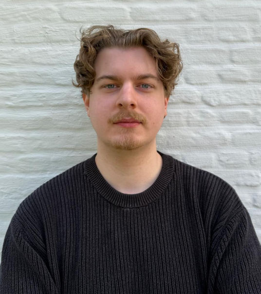
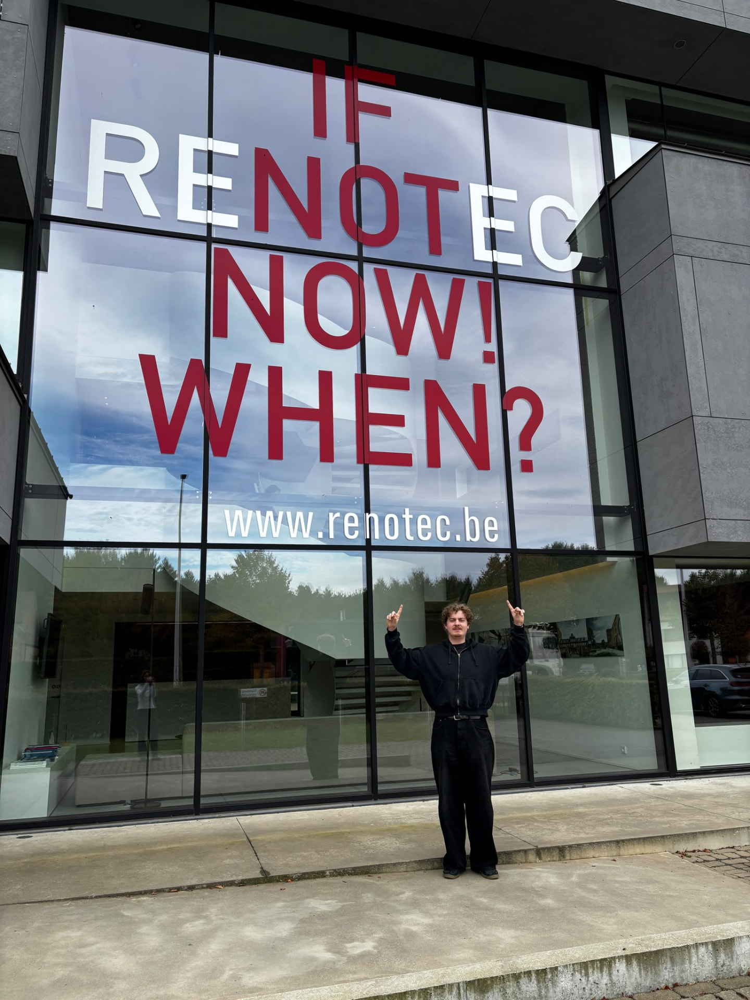
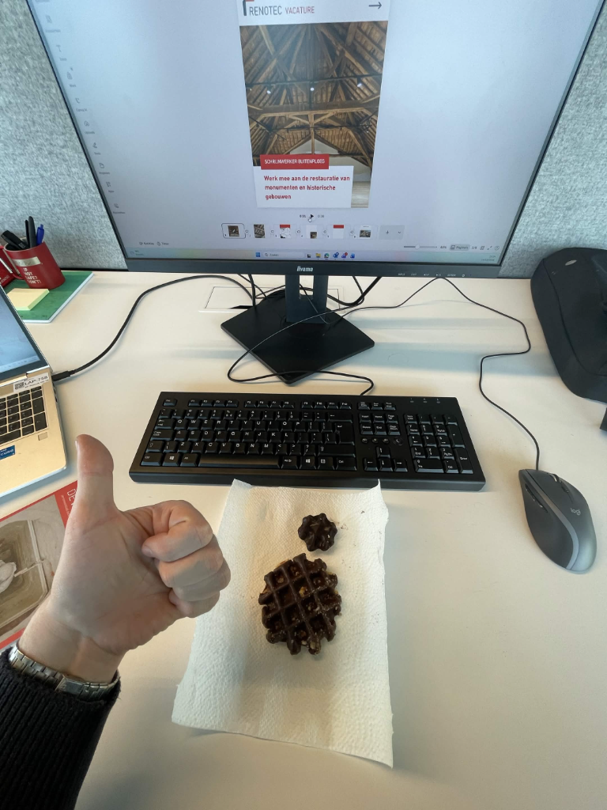
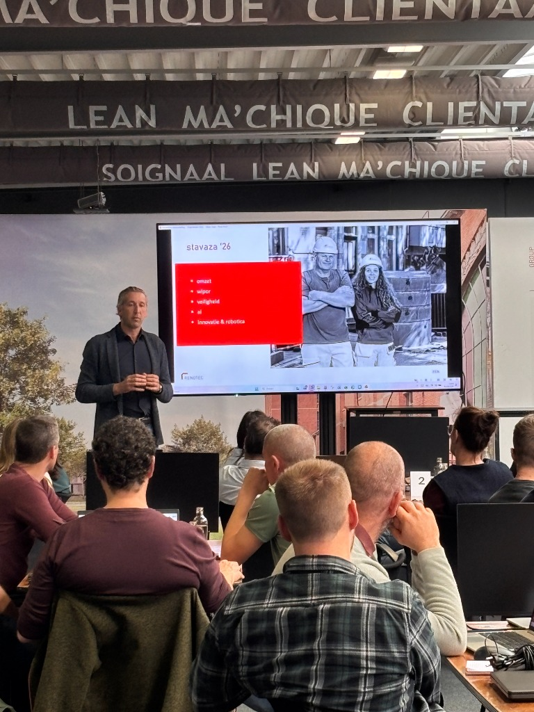

Wie ik ben
Eerlijk, behulpzaam en altijd meedenkend. Een technische mindset met een sterke creatieve drive.
Siebe Peeters
Geel, België
MCS · AP Hogeschool
Software development

Siebe Peeters — marketing × code
"Ik bouw verhalen die werken — strategisch denken, technisch maken, menselijk vertellen."
— PERSONAL STATEMENTEerlijk, behulpzaam en altijd meedenkend. Een technische mindset met een sterke creatieve drive.
Architectuur, statistieken, technologie en webdesign — alles wat structuur en schoonheid samenbrengt.
Probleemoplossend, ondersteunend en gefocust op detail. Visueel én functioneel.
AP Hogeschool · Antwerpen
STUDIEColruyt · klantgerichtheid, samenwerking, efficiëntie
WERKProgrammeren & probleemoplossend denken
ROOTSNederlands moedertaal · Engels vloeiend
Visuele content gemaakt volledig binnen de huisstijl van AP Hogeschool — social, campagne, consistent on-brand.
Volledige opzet van een fictief event: draaiboek, eigen website, communicatieplan en post-event analyses.
Fictief B2B aanbod uitgewerkt en gepromoot voor Basic-Fit — van propositie tot pitch en go-to-market.
Verhalen die mensen écht raken.
Nieuwsgierig naar elke nieuwe stack.
Visueel, scherp en on-brand.
Interfaces met karakter.
Complexiteit als puzzel.
Mijn verslag over mijn ervaringen tijdens werkplekleren.

Hier is het dan: de start van mijn WPL1-ervaring binnen Renotec. Direct vanaf de eerste dag werd ik hartelijk ontvangen door Shana en werd ik goed begeleid tot aan mijn mentor, die me direct naar de basis-IT-opleiding bracht. Dat stond ook op mijn planning voor de eerste dag. Dit was zeer boeiend, want het ging over de zwakke punten in cybersecurity, namelijk onszelf, en hoe geneigd we zijn om zomaar op links te klikken. Ook was er nog uitleg over alle interne software.
Op mijn tweede dag begon ik direct aan mijn one-pager en vulde ik de vragenlijst in met behulp van mijn mentor An. Daarna heeft An mij ook heel wat uitleg gegeven over mijn taken en wat er op de planning staat. De rest van de dag heb ik besteed aan het maken van een AI-agent die in de toekomst het invullen van meta-titels, beschrijvingen en alt-teksten voor SEO- en GEO-doeleinden moet vergemakkelijken. Dit is één van mijn grote taken voor de komende 7 weken.
Op mijn derde dag heb ik in de ochtend verder gewerkt aan mijn AI-agent en had ik daarna mijn eerste meeting over taken en de opkomende beurzen waar Renotec aanwezig zal zijn. Daar besefte ik dat er heel veel bij komt kijken. Daarna heb ik een contentpost ontworpen voor de nieuwe vacatures in Nederland en moest ik ook al brainstormen over leuke slogans voor de werfdoeken aan het nieuwe gebouw in Waalwijk, Nederland (vlakbij de Efteling).
En toen zat mijn eerste week stage er al op. Ik kijk zeker uit naar wat de komende weken gaan brengen, want de eerste week was al zeker boeiend en ik heb veel geleerd.
REFLECTIE WEEK 1"Mijn eerste week was alvast een boeiende start en ik kijk ernaar uit om de komende weken nog meer bij te leren bij Renotec."

Voilà sé, de tweede week zit er ook al op! Ook deze week heb ik weer aan heel wat verschillende taken kunnen werken en nieuwe dingen bijgeleerd.
Maandag begon met het kick-offgesprek met mevrouw Campo, waarna ik verder heb gewerkt aan mijn AI-agent. Ik heb de alt-teksten, dubbele beschrijvingen en korte titels in orde gebracht en kreeg feedback op de taken van vorige week. Daarnaast waren er nieuwe collega's van het Legal-team op kantoor en was er ook iets lekkers voorzien. Wouter had zelfgemaakte cheesecakes meegebracht en er waren ook wafels. Die waren duidelijk te lekker, want ze waren op voordat ik er een foto van kon nemen!
Op dinsdag heb ik opnieuw een vacaturepost gemaakt, deze keer voor een schrijnwerker in de buitenploeg. Daarnaast heb ik een caption opgesteld voor de Currently Building-serie, gebaseerd op de transcriptie van een aflevering. Ook heb ik een opleiding bijgewoond over het belang van MarCom voor beginnende projectleiders en nieuwe medewerkers. Zo krijgen starters een beter beeld van wat onze afdeling doet en hoe we andere teams binnen het bedrijf ondersteunen. Tussendoor ben ik ook begonnen met het aanvullen van ontbrekende metabeschrijvingen met behulp van mijn AI-agent.
Woensdag heb ik de laatste metatitels afgewerkt, zodat ze klaar zijn om aan de website toe te voegen. Daarna volgde onze wekelijkse vergadering, waarin we bespraken wat er nog allemaal moet gebeuren. Ik kreeg ook een heleboel boeiende nieuwe taken toegewezen. Vervolgens ben ik werkschoenen gaan passen voor mijn eerste werfbezoek, waar ik ondertussen al naar uitkijk. In de namiddag stond er nog een vergadering op de planning over de voorbereidingen voor de FSTT-beurs. Na afloop heb ik de belangrijkste punten omgezet in een concreet verslag met een to-do-lijst. De rest van de namiddag heb ik besteed aan het zoeken naar leuke gadgets voor op de jobbeurs en het bedenken van een concept voor een quizvraag met bijbehorend filmpje.
Het was opnieuw een goedgevulde week waarin ik aan verschillende soorten taken heb kunnen werken. Ik kijk alvast uit naar wat de volgende week zal brengen!
REFLECTIE WEEK 2"Een goedgevulde week waarin ik met AI, content en nieuwe uitdagingen weer veel heb bijgeleerd."

01 / 03Ook deze week heb ik niet stilgezeten! Ik heb weer aan heel wat verschillende taken kunnen werken, van de website optimaliseren tot de voorbereidingen voor de komende beurzen.
Maandag begon met wat extra uitleg over WordPress en hoe ik de website verder kan aanpassen. Daarna ben ik verder op zoek gegaan naar leuke gadgets voor de komende beurzen. Voor de Renosummit-beurs heb ik ook verschillende slogans bedacht die op de grijpmachine gebruikt kunnen worden. Vervolgens heb ik verder nagedacht over ideeën voor de quizvraag van Statix en de bijhorende scenario's. Later op de dag heb ik de wekelijkse vacaturepost gemaakt, deze keer voor een Calculator en een Technisch Commercieel Vertegenwoordiger. Ik heb de dag afgesloten met het aanvullen van de ontbrekende Nederlandstalige metatitels op de website. Daarbij bleek dat er ook nog wat werk was aan de Franse pagina's.
Dinsdag ben ik gestart met het verder optimaliseren van de WordPress-website door metatitels en metabeschrijvingen aan te vullen. Daarna volgde onze wekelijkse vergadering, waarin we de planning voor de komende weken hebben besproken. Aansluitend hadden we een overleg over de definitieve keuze van de gadgets voor de jobbeurs en de quizvraag voor Statix. Na afloop heb ik een verslag gemaakt met de belangrijkste besproken punten en een concrete to-do-lijst voor de volgende stappen. Ik mocht ook voor de gekozen gadgets offerteaanvragen uitsturen naar verschillende leveranciers. Zo kreeg ik meteen wat meer inzicht in de praktische kant van de beursvoorbereidingen. Ik heb de dag afgesloten met het verder aanvullen van de Franse pagina's, zodat ook daar de metatitels en metabeschrijvingen in orde zijn.
Woensdag had ik mijn eerste individuele gesprek met mijn stagebegeleider, mevrouw Campo. We hebben besproken hoe mijn stage tot nu toe verloopt en welke taken ik allemaal uitvoer. Daarna heb ik de laatste alt-teksten afgewerkt en mijn Excel-bestand volledig aangevuld. Ook de WordPress-website is ondertussen zo goed als volledig aangevuld met de nodige SEO- en GEO-elementen.
In de namiddag stond er een AI-opleiding en workshop op de planning. We begonnen met een lekkere broodjeslunch, waarna de directie wat meer uitleg gaf over de stand van zaken binnen Renotec. Daarbij kwamen onder andere de omzet, de groei van het bedrijf en het huidige gebruik van AI aan bod. Ik vond het interessant om te horen hoe Renotec naar de toekomst kijkt en hoe ze AI willen inzetten als ondersteuning voor werknemers, in plaats van als vervanging. Daarna was het tijd voor het praktische gedeelte, waarin we verschillende handige tips en tricks kregen om AI efficiënter te gebruiken in ons dagelijkse werk. Dat sloot natuurlijk goed aan bij mijn eigen taken, aangezien ik tijdens mijn stage ook bezig ben met AI en de mogelijkheden ervan voor SEO en GEO.
Het was opnieuw een goedgevulde week waarin ik aan verschillende projecten heb kunnen meewerken. Vooral de combinatie van websiteoptimalisatie, beursvoorbereidingen en de AI-workshop maakte het een afwisselende week. Ik kijk alvast uit naar wat er volgende week op de planning staat!
REFLECTIE WEEK 3"Een afwisselende week waarin websiteoptimalisatie, beursvoorbereidingen en AI samenkwamen."
Ik was zo druk bezig dat ik vergat een foto te maken. De herinneringen zijn er gelukkig wel!
Het was weer een drukke en leerrijke week! Ik heb deze week mijn eerste grote taak van mijn stage kunnen afronden en ben ondertussen ook al met nieuwe opdrachten aan de slag gegaan. Daarnaast heb ik verder gewerkt aan de nieuwsbrief en de voorbereidingen voor de komende beurzen.
Maandag begon met een mail over foto's die niet terug te vinden waren in de mediabibliotheek om de alt-teksten toe te voegen. Gelukkig kreeg ik ook meteen wat uitleg over hoe ik dit kon oplossen. Daarna ben ik aan de slag gegaan om de alt-teksten op de juiste manier aan alle foto's toe te voegen. Daarnaast mocht ik enkele artikels voor de nieuwsbrief tekstueel verwerken en een passende quote voorzien voor de nieuwsbrief voor bedienden. Ook heb ik opnieuw contact gehad met een leverancier voor de gadgets. Ondertussen zijn de eerste twee offertes binnengekomen, die ik in een overzichtelijke tabel heb verwerkt. Zo kunnen we later alles gemakkelijk met elkaar vergelijken. Ik heb de dag afgesloten door het grootste deel van de alt-teksten correct in te vullen.
Dinsdag ben ik gestart met het afwerken van de laatste alt-teksten. En daarmee is mijn eerste grote taak van de stage officieel afgerond! Het is fijn om een project waar ik de voorbije weken veel tijd in heb gestoken eindelijk te kunnen afvinken. Tijd dus om aan de volgende opdracht te beginnen! Daarnaast hadden we ons wekelijkse overleg met An, Ellis en mezelf, waarin we de openstaande to-do's en de planning bespraken. Daaruit kwamen ook enkele extra opdrachten voort. Zo mocht ik een presentatie naar het Frans vertalen, wat ik meteen heb gedaan. Verder heb ik de maandpost voor oktober uitgewerkt en ook de vacaturepost van deze week gemaakt.
Woensdag ben ik begonnen met het verzamelen van foto's voor het terugblikrubriekje van Reno. Daarna heb ik een heleboel slogans bedacht voor gadgets waarop voldoende ruimte is om een tekstje te personaliseren. Het is altijd leuk om ook wat creatiever te kunnen werken en verschillende ideeën uit te proberen. Vervolgens ben ik in de kelder op zoek gegaan naar leuk materiaal dat ik kan gebruiken voor het filmpje dat ik volgende week ga opnemen. Ik heb ook alvast het script uitgewerkt, zodat ik dinsdag goed voorbereid aan de opnames kan beginnen. Zo weet ik op voorhand welke shots ik nodig heb en hoe het filmpje ongeveer zal verlopen.
Het was opnieuw een goedgevulde week waarin ik een belangrijke opdracht heb kunnen afronden en tegelijk al nieuwe dingen heb bijgeleerd. Ik kijk ernaar uit om volgende week met het filmpje aan de slag te gaan en te zien hoe mijn ideeën uiteindelijk in beeld zullen worden gebracht!
REFLECTIE WEEK 4"Een mooie mijlpaal: mijn eerste grote opdracht is afgerond, terwijl de volgende ideeën al klaarstaan."
Het verslag van week 5 verschijnt hier zodra het klaar is.
Het verslag van week 6 verschijnt hier zodra het klaar is.
Het verslag van week 7 verschijnt hier zodra het klaar is.
Het WPL2-journaal en de weekverslagen verschijnen zodra het semester start.